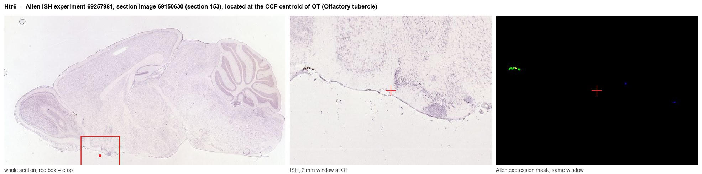
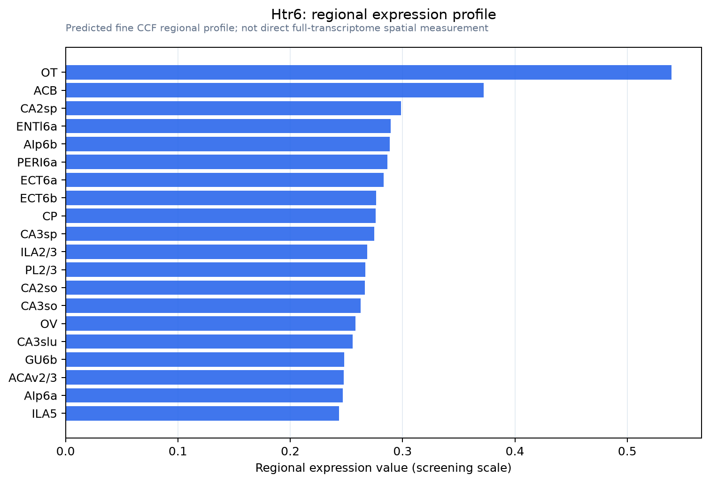

Htr6
5-hydroxytryptamine receptor 6 (5-HT-6) (5-HT6) (Serotonin receptor 6)
Spatial tier: RESTRICTED · Class: GPCR · Top region: OT (Olfactory tubercle) · Positive regions: 21/554
42.6Discovery Score
35.5Targetability Score
CEvidence grade C
What this means: Htr6: fine CCF profile is restricted toward OT (top regions: OT, ACB, CA2sp, ENTl6a, AIp6b; 21 positive regions); direct spatial validation is still required.
Function in OT: evidence, prediction, innovation
- Gene function
- Htr6 encodes the 5-HT6 receptor, a Gs-coupled GPCR that raises cAMP/PKA and also signals through mTOR, Cdk5 and Fyn independently of serotonin, with prominent localisation to neuronal primary cilia. It is almost exclusively brain-expressed and a long-standing drug target for cognition and obesity.
- Region function
- The olfactory tubercle is ventral-striatal tissue whose D1 and D2 medium spiny neurons link odour input to reward value, driving odour-guided approach, hedonics and drug-associated learning.
- Published in this region
- expression only Expression only, but strong. Helboe et al. 2015 showed by double in situ hybridization that 5-HT6 mRNA is high in medium spiny neurons of the olfactory tubercle, caudate-putamen and accumbens, colocalised with both D1 and D2 mRNA and absent from cholinergic and monoaminergic neurons. Gérard et al. 1997 found abundant 5-HT6 immunoreactivity in the OT plexiform layer. Function has been tested only in adjacent accumbens: Ferguson et al. 2008 showed raised 5-HT6 expression there abolishes cocaine place preference while sparing locomotor sensitisation.
- Predicted function
- Prediction: OT 5-HT6 provides tonic Gs/cAMP drive biasing D1- versus D2-MSN excitability and gating odour-reward plasticity. Extending the accumbens result, OT-restricted overexpression or agonism should impair odour-cued place preference without changing locomotion, while local SB-271046 should facilitate odour-reward acquisition. Mouse expression is much lower than rat, so sensitive detection or rat work may be required.
- Innovation
- ★★★☆☆ 3/5 5-HT6 is well studied in dorsal striatum and accumbens and its OT expression is documented, but nobody has manipulated it specifically in the olfactory tubercle.
- Tools
- Antagonists SB-271046 (orally active, brain penetrant) and SB-399885; agonist WAY-181187; extracellular-epitope 5-HT6 antibodies (e.g. Alomone ASR-038); Htr6 reporter and knockout lines via MGI; OT MSN access via Drd1-Cre and Adora2a-Cre.
- References
Direct evidence located at the region

Allen ISH experiment 69257981, section image 69150630 (section 153): the section that contains the CCF centroid of Olfactory tubercle according to the Allen image-to-atlas alignment (reference_to_image), with a 2 mm window around that point. Left: whole section, red box = window. Middle: ISH signal. Right: Allen's expression-mask view of the same window. open this image in the Allen viewer
Look it up yourself: Allen Mouse Brain ISH for Htr6Allen reference atlas: OT (structure 754)ABC Atlas MERFISH viewer(in the ABC Atlas choose dataset MERFISH-C57BL6J-638850-CCF, colour cells by gene "Htr6" or by parcellation_substructure "OT")All genes confined to OT + 3-D brain
Direct spatial evidence
MERFISH REGION LOCATOR

Regional expression figure

Predicted WMB × fine-CCF profile; not direct full-transcriptome spatial measurement.
Spatial profile
Evidence and specificity
- Evidence status
- PREDICTED_FINE
- Direct sources
- None; predicted localization only
- Exclusive threshold
- 12 positive regions out of 554
- Spatial specificity
- 0.287
- Top-region fraction
- 0.066
- Filter status
- PASS
Interpretation limits
- Cell-type-to-region projection is imputed expression, not direct spatial measurement.
- Adult reference atlases do not establish stability across age, sex, strain, state, or disease.
- Transcript abundance does not guarantee protein abundance or genetic-tool performance.